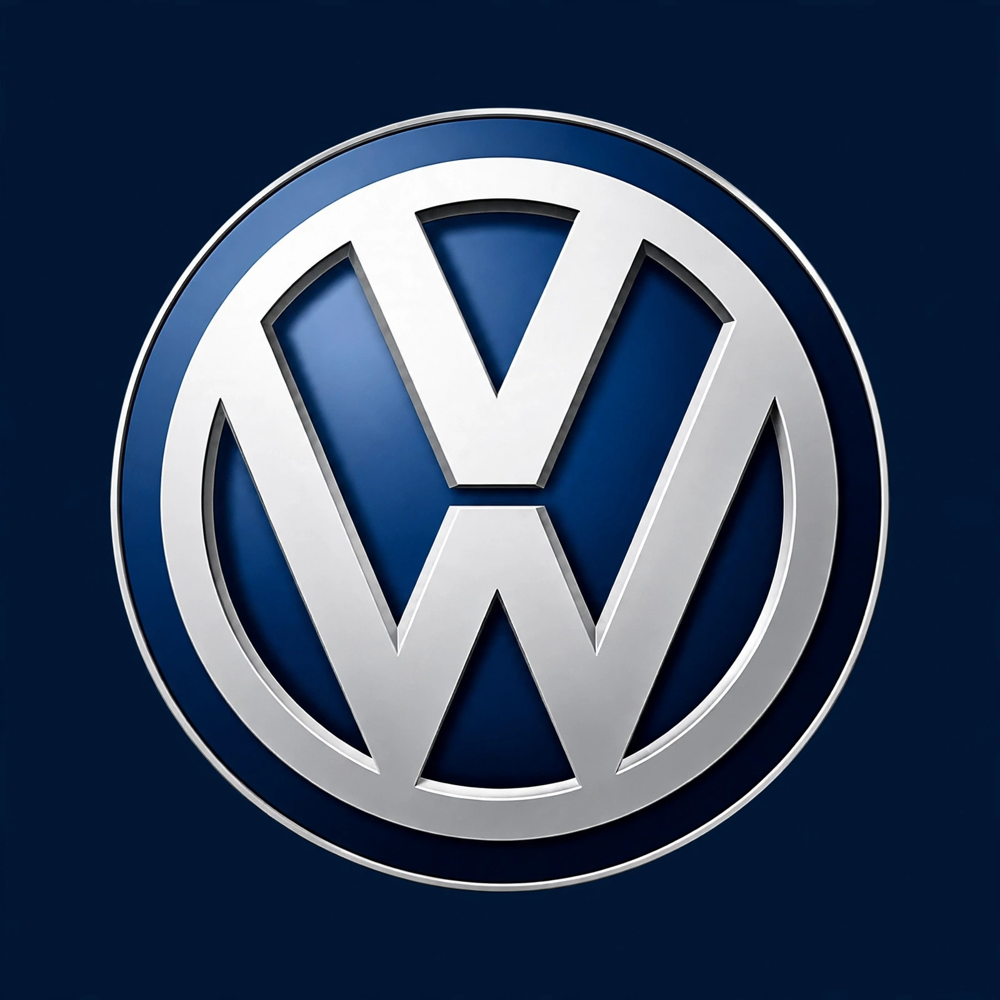

Volkswagen Group

Image: Volkswagen logo — silver VW emblem in a circle on a dark blue background | |
| Type | Public (Aktiengesellschaft) |
|---|---|
| Industry | Automotive |
| Founded | 28 May 1937; Berlin, Germany |
| Founder | German Labour Front |
| Headquarters | Wolfsburg, Lower Saxony, Germany |
| Area served | Worldwide |
| Products | Automobiles, motorcycles, commercial vehicles |
| Brands | Volkswagen, Audi, Porsche, Škoda, SEAT, Cupra, Lamborghini, Bentley, Ducati, MAN, Scania |
| Revenue | €322 billion (approx., 2023) |
| Employees | ~680,000 (approx.) |
| Website | vwgroup.com |
Volkswagen AG, known internationally as the Volkswagen Group, is a German multinational automotive manufacturer headquartered in Wolfsburg, Lower Saxony. It is one of the world's largest automakers by sales, rivalling Toyota, and the largest carmaker in Europe.
The group's core brand is Volkswagen Passenger Cars; its portfolio spans volume brands such as Škoda and SEAT/Cupra, premium brand Audi, and luxury and sports marques Porsche, Lamborghini, Bentley and Ducati.
History
Volkswagen was founded in 1937 by the German Labour Front under the Nazi regime to produce a "people's car" — the design by Ferdinand Porsche that became the Beetle. After the Second World War the company was revived under British occupation, notably by Major Ivan Hirst, and grew into West Germany's industrial flagship.
Acquisitions followed: Auto Union (Audi) in the 1960s, SEAT in 1986, Škoda in the 1990s, and Bentley, Lamborghini and Bugatti in 1998. Porsche AG was integrated in 2012 after a celebrated takeover battle. In 2015 the company was engulfed by the diesel emissions scandal ("Dieselgate"), in which software was found to cheat emissions tests; the affair cost the group tens of billions of euros in fines and settlements.
Operations
The group operates more than 100 production facilities across Europe, the Americas and Asia. China is its largest single market, served through joint ventures with FAW and SAIC. Major shareholders include Porsche SE, the state of Lower Saxony and Qatar's sovereign wealth fund.
Electric vehicles
Since 2019 the group has pursued a large-scale electric strategy built on the MEB platform (the ID. family), with the premium PPE architecture for Audi and Porsche and substantial investment in battery plants through its PowerCo subsidiary.
See also
Porsche · Audi · Diesel emissions scandal · Ferdinand Porsche